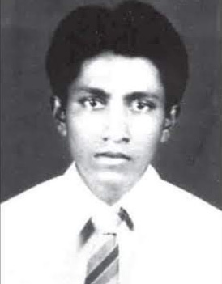
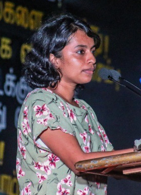
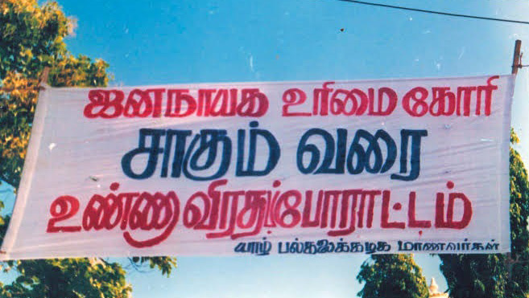
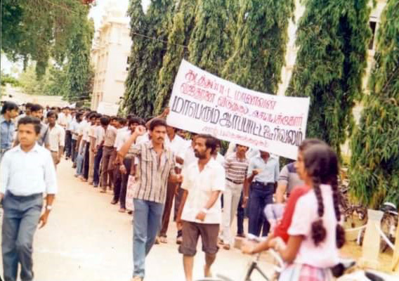
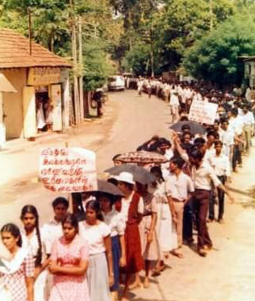
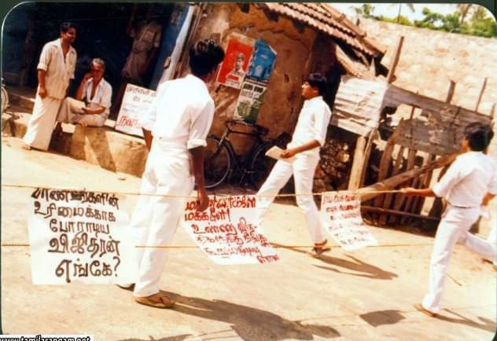
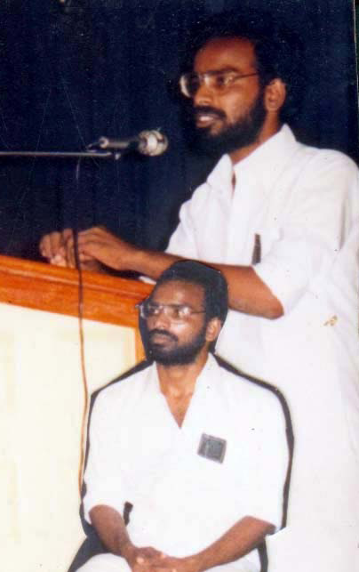
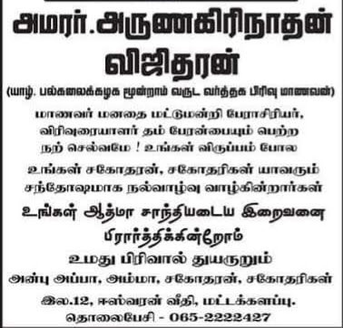

From Vijitharan to Swastika: The Shifting Tides of Activism at Jaffna University
From Vijitharan to Swastika: The Shifting Tides of Activism at Jaffna University
Jaffna Monitor
hellojaffnamonitor@gmail.com
8
Vijitharan
Swasthika Arulingam
S
wastika Arulingam, a human rights activist and
lawyer, encountered significant opposition at the
University of Jaffna, thwarting her from engaging
in a planned event there. The root of this discord was her
critique of the LTTE, which she has publicly labelled as a
fascist entity.
During the ceasefire period from 2000 to 2006, the
University of Jaffna served as a de facto epicentre for
LTTE sympathizers, perpetuating the group’s ideological
influence. Selvarajah Kajendran, once the student union
leader and now a member of parliament for the Tamil
National People’s Front, had been a staunch advocate
for the LTTE. His ascent to student leadership and his
continued political trajectory, commencing with his MP
role for the Tamil National Alliance (TNA) in 2004 amid
accusations of electoral improprieties, reflect the deep
intertwining of LTTE politics within the university’s
governance.
The experience of Swasthika Arulingam highlights a
broader issue: while individual perspectives on her actions
and intentions may differ, her fundamental right to
express her opinions freely and without fear or obstruction
remains indisputable. This right carries immense weight
given the history of the University of Jaffna, where, in
the past, students paid the ultimate price for challenging
the LTTE’s oppressive ideology in pursuit of intellectual
liberty. Despite the LTTE’s military defeat, the continued
influence of its ideology within the university demonstrates
the complexities involved in eradicating its entrenched
academic and cultural foothold. The situation at the
university is emblematic of the difficulties faced by
advocates of free expression and democratic principles in
environments that have long been under the shadow of
tyranny.
Remembering Vijitharan: A Chapter of Courage and
Consequence
The years 1985 and 1986 marked a defining period in
Jaffna’s history. During this era, Tamil militant groups,
despite their ideological differences, united to defend the
city of Jaffna against the Sri Lankan army’s incursion.
However, the triumph was fleeting as the LTTE decimated
TELO, another militant faction. Militants from the Eastern
Province, unfamiliar with Jaffna’s labyrinthine streets, were
tragically ensnared and massacred. This starkly contrasted
with the local TELO fighters who, knowing the terrain,
often escaped. Some narratives suggest this was not mere
BY:
David Reynolds Ignatius
From Vijitharan to Swastika:
The Shifting Tides of Activism
at Jaffna University
OPINION


Jaffna Monitor hellojaffnamonitor@gmail.com 9 University and Jaffna school students unite in protest against the LTTE following the abduction of Jaffna University student Vijitharan.




Jaffna Monitor hellojaffnamonitor@gmail.com 10 happenstance but an intentional purge by the LTTE, fueled by a sense of regional supremacy, which led to mercilessly targeting Eastern militants while sparing their northern counterparts with warnings. The violence against the Eastern militants culminated in their brutal executions and the desecration of their bodies. During tumultuous times, students from the Highlands and Eastern Provinces at Jaffna University were subjected to harsh persecution by the LTTE, often without proper investigation, driven by mere suspicion. Rumors circulated that some of this persecution was due to personal vendettas. One such rumor involved the LTTE’s Jaffna regional commander, Kittu, who reportedly took retaliatory actions because university students ragged someone believed to be his girlfriend, Cynthia. This situation put the safety of students from the affected regions in jeopardy, prompting them to consider transferring to the relatively safer southern campuses. Amidst the turmoil, there arose a resolute belief that students from the Highlands and Eastern Provinces should not be deprived of their academic opportunities in Jaffna. Advocates voiced that these students had an inalienable right to education and should be able to progress in their studies at Jaffna University without the shadow of fear looming over them. Amid the LTTE’s pervasive intimidation, the Jaffna University student council often failed to stand up for these vulnerable students. It was during this critical time that Arunagirinathan Vijitharan, a resolute commerce student from Batticaloa, emerged as a leader, rallying his peers and leading protests, often circumventing the passive official student council. The firm resolve of Vijitharan to champion advocacy and resist oppression came at a steep, personal cost. One day, without warning, he vanished as if into thin air, an event that sent shockwaves through his community. Although no one officially claimed responsibility for his disappearance, it was an open secret that the LTTE’s high-ranking leaders were behind this grim act. “Colonel” Kittu, the military overseer, alongside Thileepan, the LTTE’s political leader in Jaffna at the time, were both rumoured to have played a part in orchestrating his sudden abduction. As a vocal advocate for student rights, Vijitharan was a thorn in the side of those who wished to silence dissent. His subsequent disappearance remains one of the many unsolved mysteries of the conflict. The abduction triggered one of the last significant public protests against the LTTE by the Tamil community. This series of demonstrations, marches, and pickets represented a peak of public frustration with the LTTE’s autocratic actions, which had long suppressed democratic processes and perpetrated abductions and assassinations. Students from schools joined the outcry, signalling a united front against not only the LTTE but also other militant groups involved in the struggle for Eelam. The protests transcended Vijitharan’s case, representing a broader indictment of years of societal transgressions that had eroded democratic freedoms. At Jaffna University, students, led by Vimaleswaran, embarked on a hunger strike, resolved to continue until their demands were met or until death. This act of defiance, however, ended in tragedy when Vimaleswaran was brutally killed by the LTTE.
Today, the atmosphere at Jaffna University has shifted. Many current students, perhaps oblivious to their institution’s turbulent past, have taken actions like preventing Swastika Arulingam from attending an event. Ironically, their forerunners once courageously confronted the LTTE’s tyranny and suffered greatly for it. The current generation might be uninformed or possibly wishes to distance themselves from such distressing histories. Regrettably, the university itself appears to have neglected to honor the memory of brave individuals like Vijitharan, Vimaleswaran, and lecturer Rajini Thiranagama, whose voices were silenced by the LTTE. This serves as a somber reminder of the critical importance of remembering our past to honor the sacrifices made by those who stood for liberty and justice. Vimaleswaran

